01
СОДЕРЖАНИЕ
Новые образовательные модели, элективы, индивидуальные маршруты и проектная работа.
От академической базы к инновациям
Среду, в которой ученик проверяет интересы на практике, приобретает навыки и видит связь знания с реальными задачами.
Одна общая траектория и единственный ожидаемый результат.
Гибкий выбор, междисциплинарность и непрерывное обучение.
Фундаментальное образование становится сильнее, когда ученик понимает, зачем ему знания и где их применять.
Новые образовательные модели, элективы, индивидуальные маршруты и проектная работа.
Трансформируемые аудитории, открытые зоны, цифровые и исследовательские площадки.
Учебный маршрут должен подстраиваться под задачи ученика — а не только ученик под фиксированную программу.
Учёба как конструктор на протяжении жизни.
Проекты на пересечении предметов.
Проверка гипотез на реальных задачах.
ИИ-инструменты и адаптация маршрута.
Одна комната — разные сценарии: объяснение, дискуссия, исследование, команда.
Понятное зонирование, обзорность и комфорт общих пространств.
Места для отдыха, диалога и самостоятельной работы.
Пространства совместной работы и профессиональной поддержки.
Элективы соединяют академическую базу с интересами и будущей профессией.
Финансы, общество, предпринимательство, коммуникация.
Язык, культура, аргументация, гражданская зрелость.
ИИ, программирование, инженерия, цифровые продукты.
Рынки невозможно понять без общества, права, коммуникации и поведения человека.
Терминология и мировая практика
Поведение и финансовые привычки
Права и обязанности
Идея, бизнес-план, проект
Переговоры и презентации
Стратегия и аудитория
Письмо, речь, международная среда
Способность понимать другого, работать с текстом и смыслом, слушать, убеждать и принимать ответственные решения.
Чтение, интерпретация, идеи и художественные направления XX века.
Институты, общественное мнение, критическое понимание процессов.
Ролевые игры, диалог, ситуации реального общения.
Принципы, возможности, ограничения, этика.
Разработка и автоматизация задач.
Прототип, цифровой сервис, исследование.
Проверка решений и их последствий.
Инженерный практикум соединяет конструирование, 3D-моделирование, печать и проверку гипотез.
От рыночной идеи к проекту
Аргументация и командная работа
Стратегия, аудитория, эффект
Рабочий цифровой прототип
Гипотеза, данные, выводы
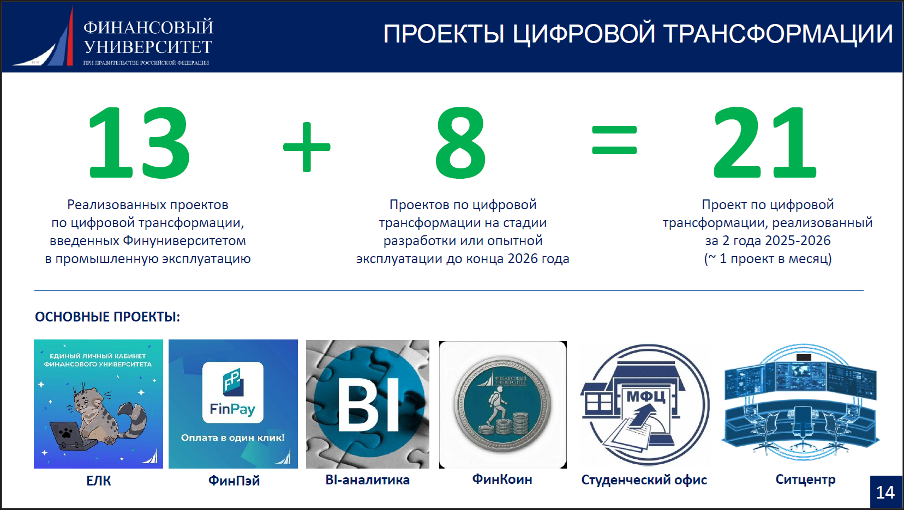
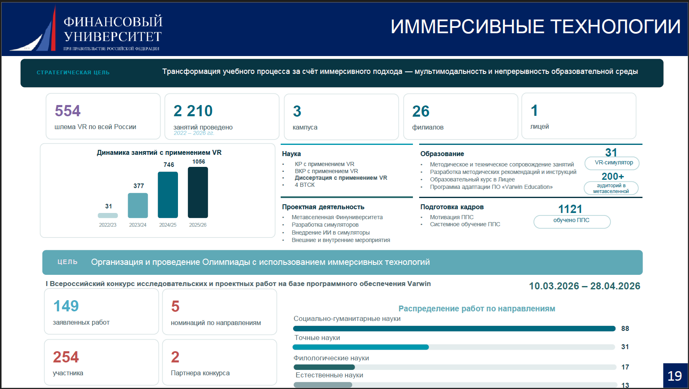
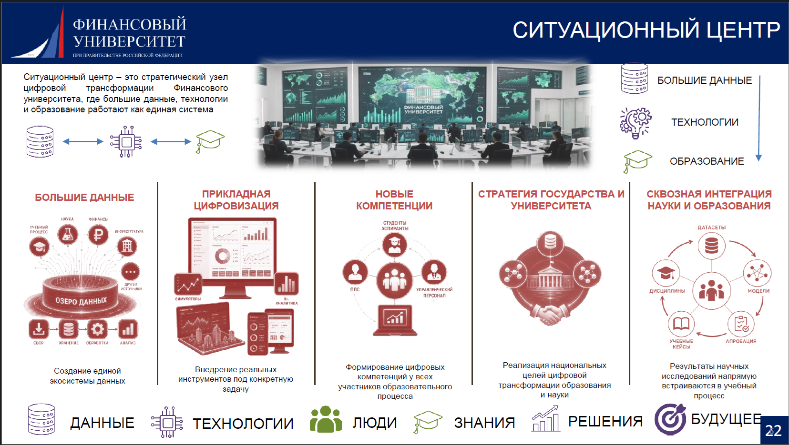
Профессиональные контексты делают учебные задачи осмысленными: экономика, право, коммуникация и технологии встречаются в реальных кейсах.
Он — наставник, навигатор и партнёр в исследовании нового.
Даёт прочный фундамент
Помогает выбрать маршрут
Поддерживает поиск и проект
Информационные зоны · студии · иммерсивные форматы · ИИ · гибкие пространства.
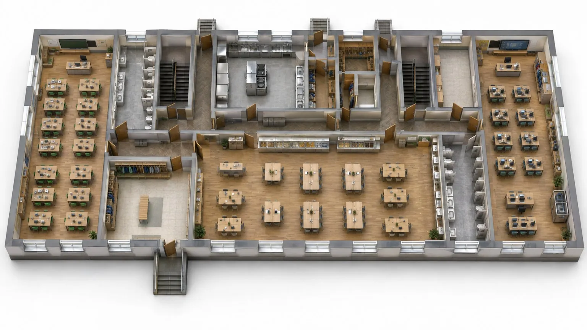
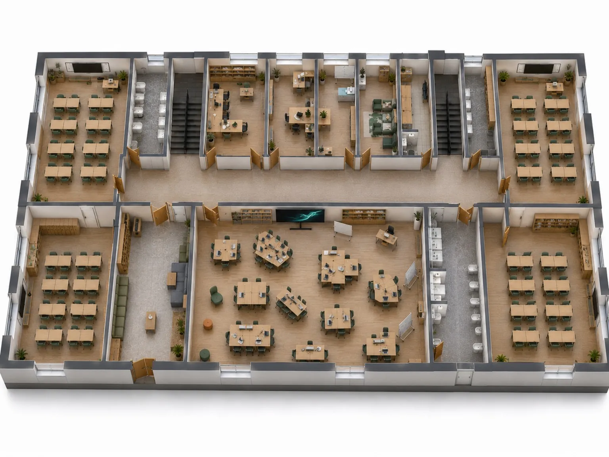
Иллюстрации концепции · не фото готового здания
Единое цифровое пространство: навигация, проекты, события, достижения.


Запись, диалог, презентация, защита. Умение говорить — часть профессионального пути.
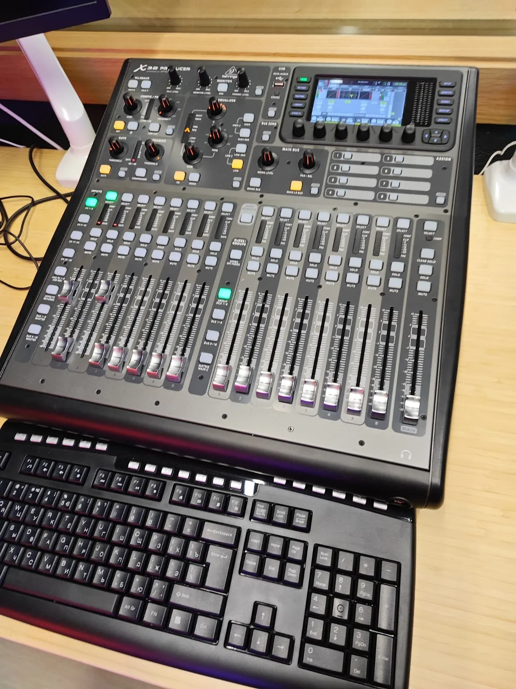
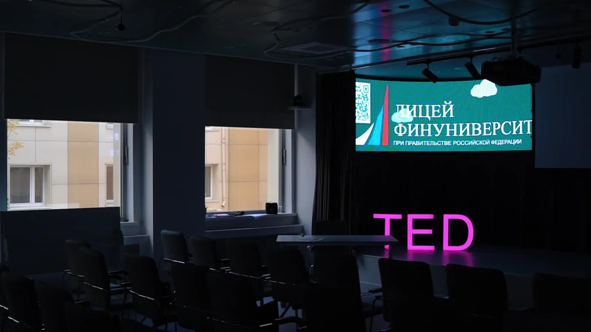
Иммерсивные среды открывают доступ к моделям явлений и процессов.
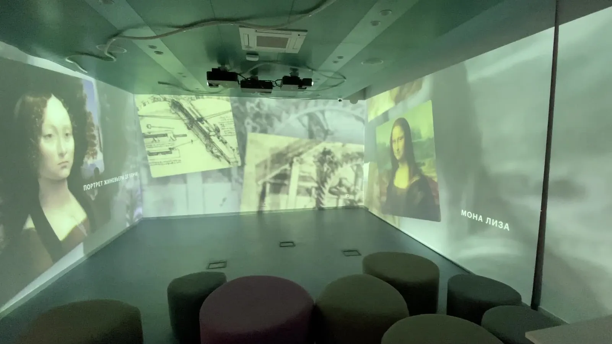
Программирование, LLM, API, агенты, исследовательские проекты и VR.
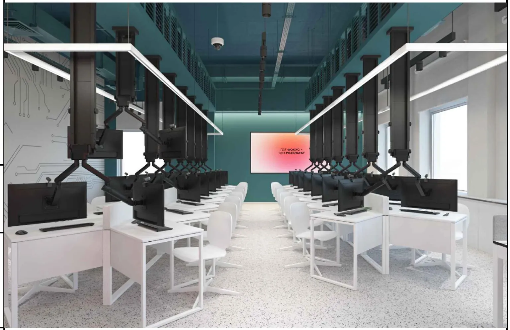
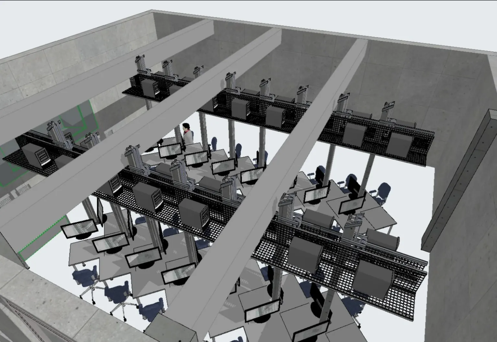
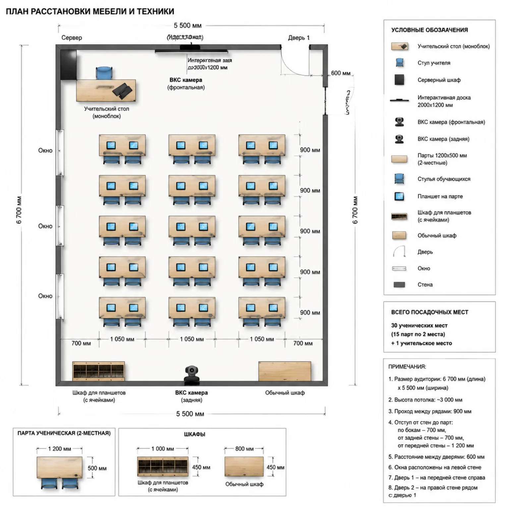
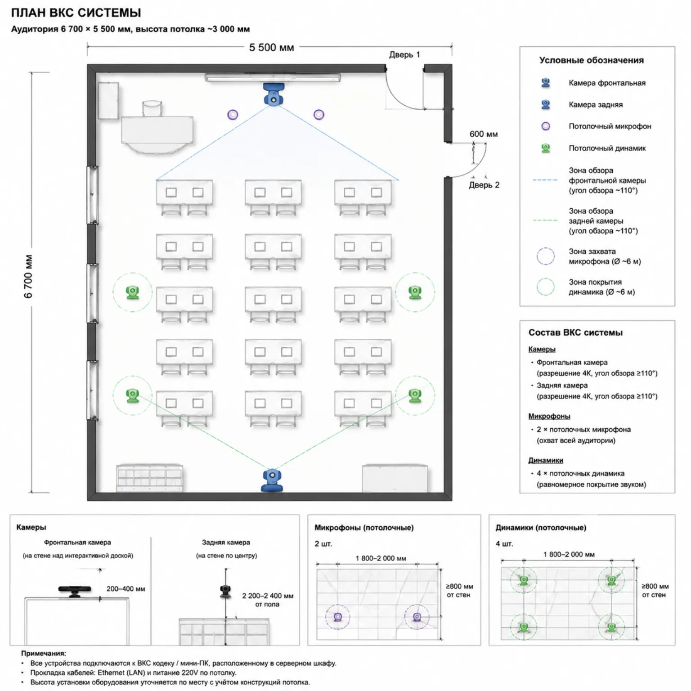
Проектные материалы · конфигурации могут изменяться
Интерактивные поверхности, совместное обсуждение и подключение внешних экспертов.
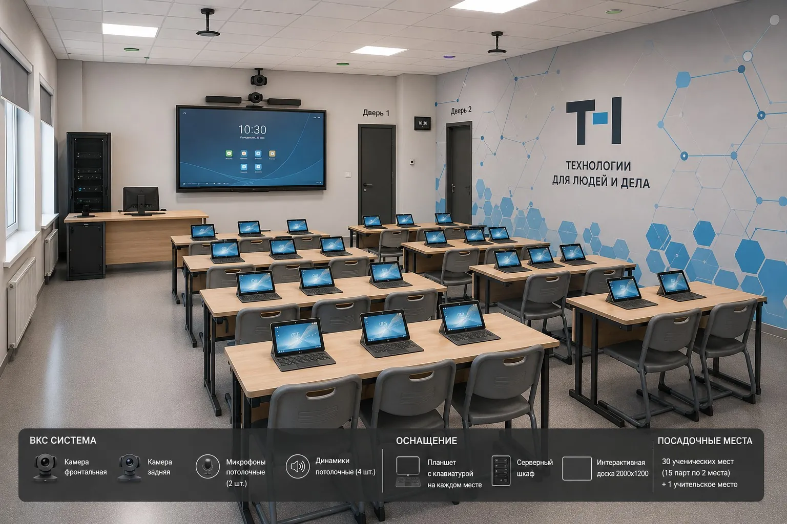
Малые группы, консультации, самостоятельная работа, онлайн-коммуникация.


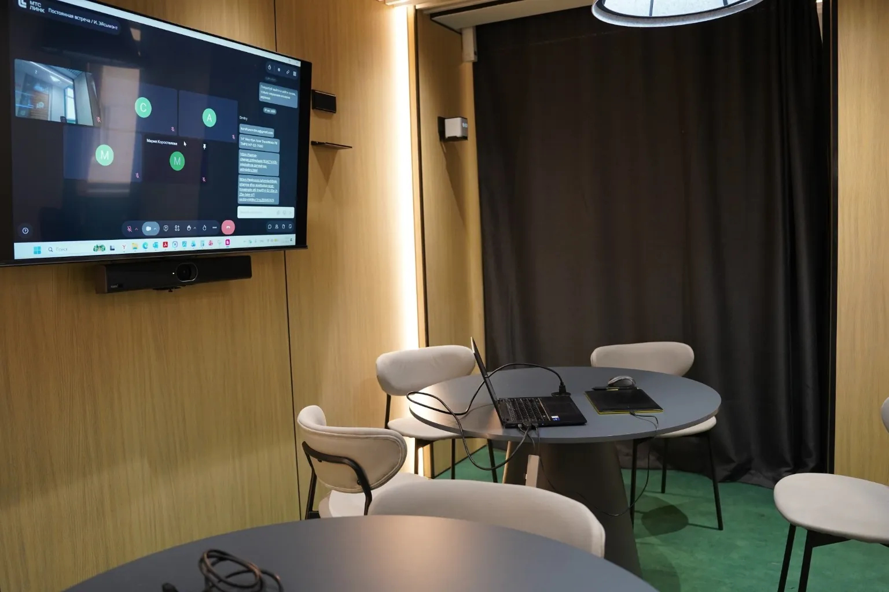
Технология полезна не количеством экранов, а тем, насколько просто она помогает человеку действовать.
По отдельности элементы полезны. Вместе они меняют образовательный опыт.
Прочные знания
Элективы и интересы
Проекты и решения
Готовность действовать
Архитектура возможностей: от академической базы — к инновациям, собственным решениям и осознанному выбору.
ЛИЦЕЙ ФИНАНСОВОГО УНИВЕРСИТЕТА ↗![Лицей Финансового университета]()
![Лицей Финансового университета]()
Выберите любой слайд. Стрелки и пробел — переключение, F — весь экран, N — заметки выступающего.